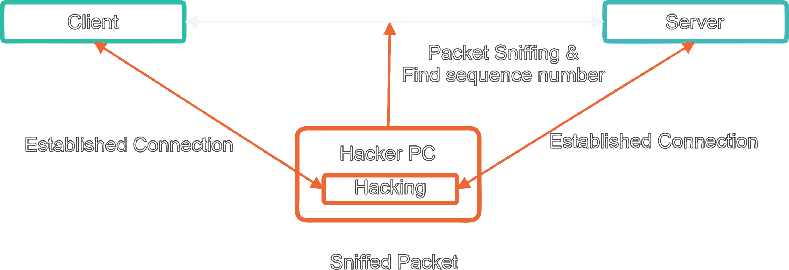

OWASP TOP-10
RSSchool
Yauhen Davidovich
Broken Authentication

Sensitive Data Exposure
Encryption of transmitted data
Encryption of stored data
XML External Entities (XXE)
Types of attack XXE:
Using XXE to extract files where the external entity that includes the file
content
is detected and returned in the application response.
Using XXE to extract files where the external entity that includes the file
content
is detected and returned in the application response.
Using XXE to blindly retrieve information through a control channel where
sensitive data is transferred from the application server to a system managed by an attacker.
Using Blind XXE to retrieve data from error messages when an attacker can
trigger an error message containing the required information.
Using XXE to extract files
Broken Access Control
mysite.ru/read_message.jsp?id=123654
Security Misconfiguration.
Using Components with Known Vulnerabilities
Insufficient Logging & Monitoring